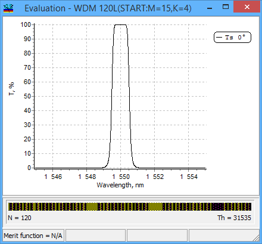
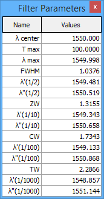

Filter mode
Filter mode
Navigation: OptiLayer Menu Commands > Analysis Menu >
Filter mode
` <peak_list.html>`__ ` <idh_menu_analysis.html>`__ ` <idh_gd_gdd.html>`__
The Filter mode in the Evaluation window enables the display of key parameters associated with filters.


When the Filter mode is activated through the right-click menu in the Evaluation window, it limits the display to a single plot with appropriate characteristics (transmittance, reflectance, or bi-directional reflectance). If there are multiple plots, it will show the first suitable plot from the list, or if none are suitable, it will display transmittance for normal incidence. In the “Filter Parameters” additional window, the main parameters related to the filter are listed. These include the central wavelength, maximum transmittance/reflectance, wavelength corresponding to the maximum value, full width at half maximum (FWHM) at 50 percent, zero width (ZW) at 0.1 level, critical width (CW) at 0.01 level, transition width (TW) at 0.001 level, as well as the corresponding wavelength values for the left and right boundaries.